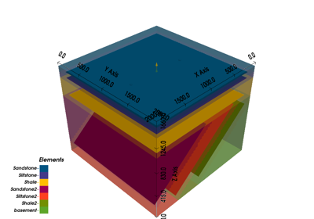

gempy.core.data.GemPyEngineConfig¶
- class gempy.core.data.GemPyEngineConfig(backend: gempy_engine.config.AvailableBackends = <AvailableBackends.numpy: 1>, use_gpu: bool = False, dtype: Optional[str] = None)[source]¶
Examples using
gempy.core.data.GemPyEngineConfig¶GemPy Models - Some More Complex Examples
GemPy Models - Some More Complex ExamplesMethods
__init__([backend, use_gpu, dtype])Attributes
backendThe data type used in the engine.
use_gpu- dtype: str | None = None¶
The data type used in the engine. If None, the default data type of the backend is used.
- __init__(backend: ~gempy_engine.config.AvailableBackends = <AvailableBackends.numpy: 1>, use_gpu: bool = False, dtype: str | None = None) None¶